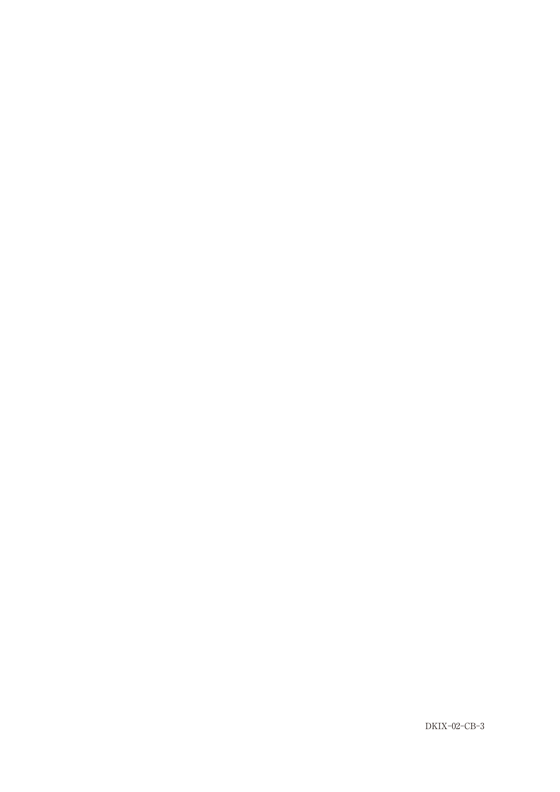
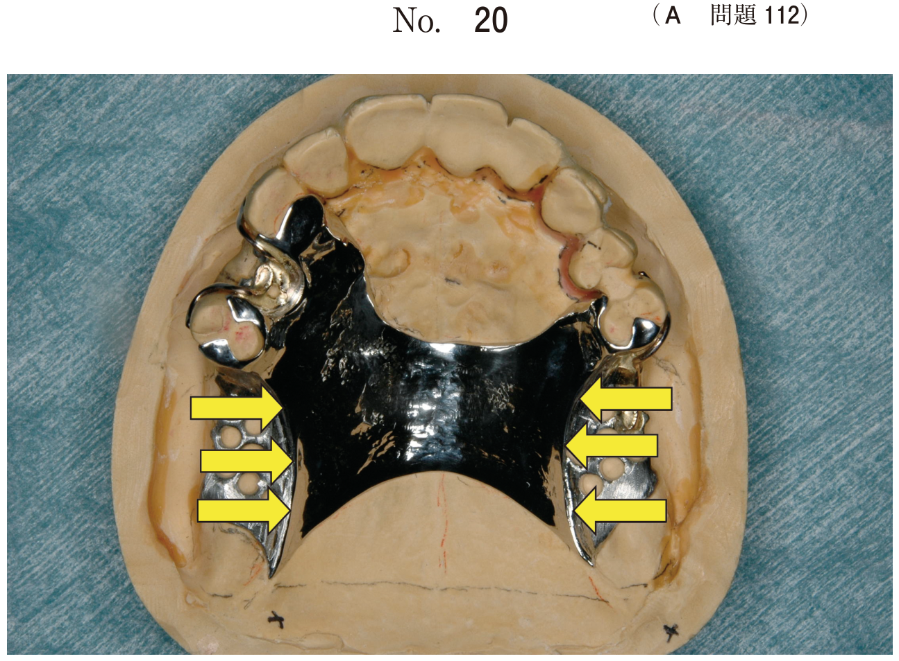
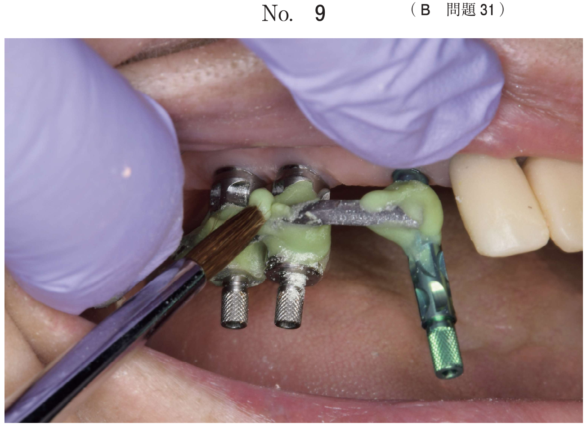
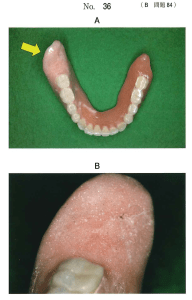

レジンの重合操作や重合収縮などが原因で人工歯の位置が変化して、咬合関係に誤差が生じることがある。この誤差を修正するにはレジン重合後に義歯を咬合器に再装着する必要がある。
| 方法 | 特徴 |
|---|---|
| スプリットキャスト法 | 作業用模型製作の過程で基底部にスプリットを形成しておく方法 |
| テンチのコア法 | 下顎ろう義歯を咬合器から取り外し、上顎人工歯の切縁と咬頭頂を約1mmの深さで石膏に印記する方法 |
| 方法 | 特徴 |
|---|---|
| アメリカ式埋没法 | 人工歯をフラスク上部に埋没。レジン床義歯に用いる。流ろう・レジン填入が容易。加圧不十分で咬合高径が高くなるおそれ |
| フランス式埋没法 | すべてフラスク下部に埋没。金属床義歯に用いる。重合後に咬合関係が変化しにくい |
埋没用石膏が硬化した後、フラスクを熱湯に3〜5分間浸漬してワックスを軟化させ、取り出す。フラスク内に残ったワックスは熱湯で洗い流す。
乾燥させた後、石膏面にレジン分離材（アルジネート水溶液）を塗布する。フラスクがまだ熱いうちに薄く塗布することが好ましく、人工歯には付着しないように注意する。
餅状になる前に填入したり、加圧が不十分だと、義歯表面に気泡（ポーラス）が発生する原因となる。
| 方法 | 重合度 | 機械的性質 | 適合性 | 操作性 |
|---|---|---|---|---|
| 加熱重合法 | ◎ | ◎ | ◎ | ○ |
| 常温重合法（流し込み法） | ○〜△ | △ | ○ | ◎ |
| マイクロ波重合法 | ◎ | ○ | ○ | ◎ |
湿熱式と乾熱式があり、一般的には湿熱式が用いられる。70℃温水中に90分間浸漬後、沸騰水中に30分間浸漬して重合する方法が一般的。低温長時間重合法（キュアリングサイクル）では75℃温水中に8時間、または70℃温水中に24時間保留する。
注意：加熱を急激に行ったり、沸騰水中にいきなり浸漬すると、レジン内部に気泡が発生することがある。
ろう義歯の埋没を石膏、寒天、シリコーンなどで行い、ポリマーとモノマーを混和すると同時に注入口から流し込む。55℃温水中、2気圧の条件下で20分間重合する。
専用のレジンと強化プラスチック（FRP）製のフラスクを使用し、電子レンジ中で500Wで3分間重合する。
重合操作終了後、フラスクを室温まで自然放冷する。沸騰水からフラスクを取り出し、室温まで自然放冷するのに5〜6時間を要するため、夜に重合し翌日に取り出すことが好ましい。義歯の保管は水中浸漬が必須。
義歯製作過程でレジン填入の際に用いる分離材はどれか。1つ選べ。
【解説】レジン填入の際に用いる分離材はアルジネート水溶液。石膏とレジンの分離に用いる。
義歯製作過程のある操作の写真（別冊No.3A、B）を別に示す。
同じ目的で行う操作はどれか。2つ選べ。

【解説】写真はスプリットキャスト法。スプリットキャスト法とテンチのコア法およびフェイスボウトランスファーは、いずれも重合後の咬合器再装着を容易にする目的で行う。
全部床義歯の製作に用いる器具の写真（別冊No.25）を別に示す。
蝋義歯試適後の過程で用いるのはどれか。2つ選べ。

【解説】蝋義歯試適後の過程（埋没・重合）で用いるのは、フラスク（イ）とフラスククランプ（エ）。
咬合器に模型を装着する際に使用する器具の写真（別冊No.18）を別に示す。
使用目的はどれか。2つ選べ。

【解説】写真はスプリットキャスト。スプリットキャスト法の使用目的は、①義歯重合後の容易な咬合器再装着、②チェックバイト法による顆路調節である。
80歳の男性。下顎義歯の維持安定不良を主訴として来院した。診察の結果、下顎義歯を再製作することとした。加熱重合レジンを用いて新義歯を製作したが、矢印のような表面状態が観察された。下顎全部床義歯の写真（別冊No.36A）と矢印の部分を拡大した写真（別冊No.36B）を別に示す。
矢印で示す状態に至った原因はどれか。2つ選べ。

【解説】写真は義歯表面の気泡（ポーラス）。原因は餅状になる前に填入したことと加圧不十分。a、b、cは正しい操作である。